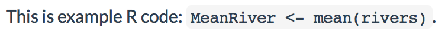
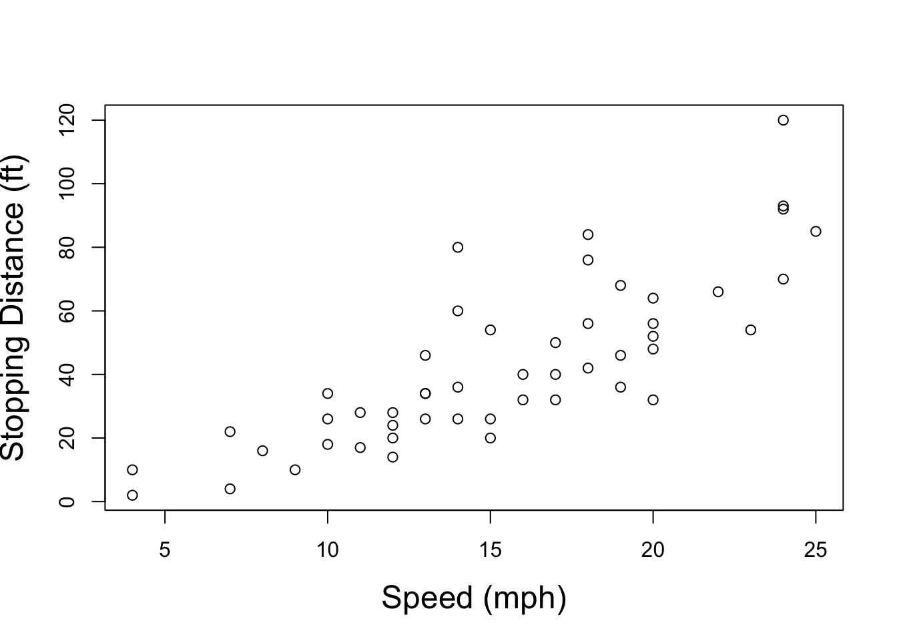

Chapter 8 Statistical Modeling and knitr/R Markdown
When you have your data cleaned and organized, you will begin to examine it with statistical analyses. In this book we don’t look at how to do statistical analysis in R (a subject that would and does take up many other books). Instead, we focus on how to make your analyses really reproducible. You do this by dynamically connecting your data gathering and analysis source code to your presentation documents. When you dynamically connect your data gathering makefiles and analysis source code to your markup document, you will be able to completely rerun your data gathering and analysis and present the results whenever you compile the presentation documents. This makes it very clear how you found the results that you are advertising. It also automatically keeps the presentation of your results, including tables and figures, up-to-date with any changes you make to your data and analyses source code files.
You can dynamically tie your data gathering, statistical analyses, and presentation documents together with knitr/R Markdown. In Chapter 3 you learned basic knitr/rmarkdown package syntax. For the rest of the chapter, I’ll refer to it as “knitr syntax”, but it applies to R Markdown as well when it is not specific to LaTeX. In this chapter we will begin to learn knitr syntax in more detail, particularly code chunk options for including dynamic code in your presentation documents. This includes code that is run in the background, i.e. not shown in the presentation document, as well as displaying the code and output in your presentation document both as separate blocks and inline with the text. We will also learn how to dynamically include code from languages other than R. We examine how to use knitr with modular source code files. Finally, we will look at how to create reproducible random analyses and how to work with computationally intensive code chunks.
The goal of this and the next two chapters, which cover dynamically presenting results in tables and figures, is to show you how to tie data gathering and analyses into your presentation documents so closely that every time the documents are compiled they actually reproduce your analysis and present the results. Please see the next part of this book, Part IV, for details on how to create the LaTeX and Markdown documents that can include knitr code chunks.
Reminder: Before discussing the details of how to incorporate your analysis into your source code, it’s important to reiterate something we discussed in Chapter 2. The syntax and capabilities of R packages and R itself can change with new versions. Also, as we have seen for file path names, syntax can change depending on what operating system you are using. So it’s important to have your R session info available (see Section ?? for details) to make your research more reproducible and future-proof. If someone reproducing your research has this information, they will be able to download your files and use the exact version of the software that you used. For example, CRAN maintains an archive of previous R package versions that can be downloaded.150 Previous versions of R itself can also be downloaded through CRAN.151
8.1 Incorporating Analyses into the Markup
For a relatively short piece of code that you don’t need to run in multiple presentation documents, it may be simplest to type the code directly into chunks written in your knitr markup document. In this section we will learn how to set knitr options for handling these code chunks. For a list of many of the chunk options covered here, see Table ??.
8.1.1 Full code chunks
By default, knitr code chunks are run by R, and the code and any text output (including warnings and error messages) are inserted into the text of your presentation documents in blocks. The blocks are positioned in the final presentation document text at the points where the code chunk was written in the knittable markup. Figures are inserted as well. Let’s look at the main options for determining how code chunks are handled by knitr.
include
Use include=FALSE if you don’t want to include anything in the text of
your presentation document, but you still want to evaluate a code chunk.
It is TRUE by default.
eval
The eval option determines whether or not the code in a chunk will be
run. Set the eval option to FALSE if you would like to include code
in the presentation document text without actually running the code. By
default it is set to TRUE, i.e. the code is run. You can alternatively
use a numerical vector with eval. The numbers in the vector tell
knitr which expressions in the chunk to evaluate. For example, if you
only want to evaluate the first two expressions, set eval=1:2.
echo
If you would like to hide a chunk’s code from the presentation document,
you can set echo=FALSE. Note that if you also have eval=TRUE, then
the chunk will still be evaluated and the output will be included in
your presentation document. Clearly, if echo=TRUE, then source code
will be included in the presentation document. As with eval, you can
alternatively use a numerical vector in echo. The numbers in the
vector indicate which expressions to echo in your final document.
results
We will look at the results option in more detail in the next two
chapters (see especially Section 9.1). However, let’s briefly discuss the option value hide. Setting results='hide' is almost the opposite of echo=FALSE. Instead of showing the results of the code chunk and
hiding the code, results='hide' shows the code, but not the results.
Warnings, errors, and messages will still be printed.
warning, message, error
If you don’t want to include the warnings, messages, and error messages
that R outputs in the text of your presentation documents, just set the
warning, message, and error options to FALSE. They are set to
TRUE by default.
cache
If you want to run a code chunk once and save the output for when you
knit the document again, rather than running the code chunk every time,
set the option cache=TRUE. When you do this the first time the
document is knitted, the chunk will be run and the output stored in a
sub-directory of the working directory called cache. When the document
is subsequently knitted, the chunk will only be run if the code in the
chunk changes or its options change. This is very handy if you have a
code chunk that is computationally intensive to run. The cache option
is set to FALSE by default. Later in this chapter (Section ??),
we will see how to use the cache.vars function to cache only certain
variables created by a code chunk.
dependson
Cached chunks are only rerun when their code changes. Sometimes one
chunk will depend on the results from a prior chunk. In these cases, it
is good to rerun the chunk if the prior chunk one is also rerun. The
dependson option allows you to do this automatically.
You can specify either a
vector of the labels for the chunks depended on or their numbers in
order from the start of the document. For example, dependson=c(2, 3)
specifies that if the second or third chunks are rerun, then the current
chunk will also be rerun.
cache.extra
Sometimes to ensure reproducibility, it may be useful to rerun a chunk
when some other condition changes, such as when a new version of R is
installed or a dependent file changes. You can feed a list of conditions
to cache.extra to do this. For instance:
Here we set two conditions under which the chunk will be rerun. The
first specifies that the chunk should be rerun whenever the data.csv
file is modified. The file.info function extracts information about
the file and mtime gives the last time that the file was modified. If
this differs from when the chunk was last run, then it will be run
again. This is very useful for keeping your cached chunks and the files
they rely on in sync.
The second condition enabled by R.version reruns the chunk whenever
the R version or even the operating system changes. If you only want to
rerun the chunk when the version of R is different, then use
R.version.string.
size
If you do want to print part or all of your code chunk into a LaTeX
document, you may also want to resize the text. To do this, use the
size option. By default, it is set to size='normalsize'.
You can use any of the LaTeX font sizes listed in Chapter 11.
8.1.2 Showing code and results inline
Sometimes you may want to have R code or output show up inline with the rest of your presentation document’s text. For example, you may want to include a small chunk of stylized code in your text when you discuss how you did an analysis. Or you may want to dynamically report the mean of some variable in your text so that the text will change when you change the data. The knitr syntax for including inline code is different for the LaTeX and Markdown languages. We’ll cover both in turn.
Inline static code
There are a number of ways to include a code snippet inline with your
text in LaTeX. You can use the LaTeX function \texttt to have
text show up in the typewriter font commonly used in LaTeX-produced
documents to indicate that some text is code (I use typewriter font for
this purpose in this book, as you have probably noticed). For example,
using \texttt{2 + 2} will give you 2 + 2 in your text. Note that in
LaTeX curly brackets ({}) work exactly like parentheses in R, i.e.
they enclose a function’s arguments.
However, the \texttt function isn’t always ideal, because your LaTeX
compiler will still try to run the code inside of the function as if it
were LaTeX markup. This can be problematic if you include characters
like the backslash \ or curly brackets {}. They have special
meanings for LaTeX. The hard way to solve this problem is to use escape
characters (see Chapter 4). The backslash is an escape character in LaTeX.
Probably the better option is to use the \verb function. It is
equivalent to the eval=FALSE option for full knitr code chunks. To
use the \verb function, pick some character you will not use in the
inline code. For example, you could use the vertical bar (|). This
will be the \verb delimiter. Imagine that we want to actually include
\texttt in the text. We would type:
\verb|\texttt|The LaTeX compiler will ignore almost anything from the first vertical
bar up until the second bar following \verb. All of the text
in-between the delimiter characters is put in typewriter font.152
Inline dynamic code
If you want to dynamically show the results of some R code in your
knitr LaTeX-produced text you can use \Sexpr. This is a pseudo-LaTeX
function; it looks like LaTeX, but it is actually knitr syntax.153 Its structure
is more like a LaTeX function’s structure than knitr’s in that you
enclose your R code in curly brackets ({}) rather than the
<<>>= . . . @ syntax you use for block code chunks.
For example, imagine that you wanted to include the mean of a vector of
river lengths, 591, in the text of your document. The rivers numeric vector, loaded by default in R, has the lengths of 141 major rivers recorded in miles. You can use the mean() function to find the mean and the round() function to round the result to the nearest whole number:
## [1] 591To have just the output show up inline with the text of your document, you would type something like:
The mean length of 141 major rivers in North America is
\Sexpr{round(mean(rivers), digits = 0)} miles.R code included inline with Sexpr is evaluated using current R
options. So if you want all of the output from Sexpr to be rounded to
the same number of digits, for example, it might be a good idea to set
this in a code chunk with R’s options() function.
Inline static code
To include static code inline in an R Markdown (and regular Markdown)
document, enclose the code in single backticks (` . . . `). For
example:
produces:154

8.1.3 Dynamically including non-R code in code chunks
You are not limited to dynamically including just R code in your
presentation documents. knitr can run code from a variety of other
languages including: Python, Ruby, Bash, Julia, and Stan. All you have to do to dynamically include code from one of these languages is use the
engine code chunk option to tell knitr which language you are using.
For example, to dynamically include a simple line of Python code in an R
Markdown document type:
In the final HTML file you will get output that looks like Figure 8.1.155
FIGURE 8.1: Output from Python Engine in HTML Markdown
Many of the programming language values engine can take are listed in
Table ??.
8.2 Dynamically Including Modular Analysis Files
There are a number of reasons why you might want to have your R source code located in separate files from your markup documents even if you compile them together with knitr.
First, it can be unwieldy to edit both your markup and long R source code chunks in the same document, even with RStudio’s handy knitr code folding and chunk management options. There are just too many things going on in one document.
Second, you may want to use the same code in multiple documents, for example an article and slide show presentation. It is nice to not have to copy and paste the same code into multiple places. Instead, it is easier to have multiple documents link to the same source code file. When you make changes to this source code file, the changes will automatically be made across all of your presentation documents. You don’t need to make the same changes multiple times.
Third, other researchers trying to replicate your work might only be interested in specific parts of your analysis. If you have the analysis broken into separate and clearly labeled modular files that are explicitly tied together in the markup file with knitr, it is easy for them to find the specific bits of code that they are interested in.
8.2.1 Source from a local file
Usually, in the early stages of your research, you may want to run code
stored in analysis files located on your computer. Doing this is simple.
The knitr syntax is the same as for block code chunks. The only change
is that instead of writing all of your code in the chunk, you save it to
its own file and use the source() function to access it.156 For example, in an R Markdown file we could run the R code in a file called
main-analysis.R from our example-project like this:
Notice that we set the option include=FALSE. This will run the
analysis and produce objects created by the analysis code that can be
used by other code chunks, but the output will not show up in the
presentation document’s text.
Sourcing a makefile in a code chunk
In Chapter 6 we created a GNU Makefile to organize our data
gathering. You can run makefiles every time you compile your
presentation document. This can keep your data, analyses, figures, and
tables up-to-date. One way to do this is to run the GNU makefile in an R
code chunk with the system() function. Perhaps a better way to run makefiles from
knitr presentation documents is to include the functions in a code
chunk using the Bash engine. For example, a Sweave-style code chunk for
running the makefiles in our example project would look like this:
<<r engine='bash', include=FALSE>>=
# Change working directory to /example-project/analysis/Data
cd /example-project/analysis/Data/
# Run makefile
make cleanMerge all
# Change to working directory to /example-project/analysis/
cd /example-project/analysis/
@Please see Chapter 6 for details on the make command arguments used here.
You can also use R’s source() function to run an R make-like
data gathering file. Unlike GNU Make, this will rerun all of the data
gathering files, even if they have not been updated. This may become
very time consuming depending on the size of your data sets and how they
are manipulated.
One final note on including makefiles in your knitr presentation document source code: it is important to place the code chunk with the makefile before code chunks containing statistical analyses that depend on the data file it creates. Placing the makefile first will keep the others up-to-date.
8.2.2 Source from a URL
If you are using GitHub or another service that uses secure URLs to host
your analysis source code files, you need to use the source_url() function
in the devtools package.157 For GitHub-based source code, we find the
file’s URL the same way we did in Chapter 5. Remember to use the URL for the raw version
of the file. I have a short script hosted on GitHub for creating a
scatterplot from data in R’s cars data set. The script’s shortened URL
is http://bit.ly/1D5p1w6.158 To run this code and create the
scatterplot using source_url(), type:
## Loading required package: usethis## ℹ SHA-1 hash of file is
## "ff75a88b90decfcaefc9903bbc283e1fc4cd2339"
You can also use the devtools function source_gist() in a similar way
to source GitHub Gists. Gists are a handy way to share code over the
internet. For more details, see: https://gist.github.com/.
Similar to what we saw in Chapter 5
if you would like to use a particular version of a file stored on
GitHub, include that version’s URL in the source_url() call. This
can be useful for replicating particular results. Linking to a
particular version of a source code file will enable replication even if
you later make changes to the file. To access the URL for a particular
version of a file, first click on the file on GitHub’s website, then
click the History button. This will take you
to a page listing all of the file’s versions. Click on the Browse Code
button next to
the version of the file that you want to use. Finally, click on the
Raw button to be taken to the text-only version of the file. Copy this
page’s URL and use it in source_url().
8.3 Reproducibly Random: set.seed()
If you include simulations in your analysis it is often a good
idea to specify the random number generator state you used. This will
allow others to exactly replicate your ‘randomly’—really
pseudo-randomly—generated simulation results. Use the set.seed()
function in your source code files or code chunks to do this. For
example, use the following code to set the random number generator
state159 and randomly draw 1,000 numbers from a standard normal
distribution with a mean of 0 and a standard deviation of 2.
# Set seed as 125
set.seed(125)
# Draw 1000 numbers
draw_1 <- rnorm(1000, mean = 0, sd = 2)
summary(draw_1)## Min. 1st Qu. Median Mean 3rd Qu. Max.
## -7.211 -1.407 -0.104 -0.122 1.316 5.677The rnorm() function draws the 1,000 simulations. The mean argument
allows us to set the normal distribution’s mean and sd sets its
standard deviation. Just to show you that we will draw the same numbers
if we use the same seed, let’s run the code again:
# Set seed as 125
set.seed(125)
# Draw 1000 numbers
draw_2 <- rnorm(1000, mean = 0, sd = 2)
summary(draw_2)## Min. 1st Qu. Median Mean 3rd Qu. Max.
## -7.211 -1.407 -0.104 -0.122 1.316 5.6778.4 Computationally Intensive Analyses
Sometimes you may want to include computationally intensive analyses
that take a long time to run as part of a knitr document. This can
make writing the document frustrating because it will take a long time
to knit it each time you make changes. There are at least two solutions
to this problem: the cache chunk option and makefiles. We discussed
makefiles in Chapter 6, so let’s look at how to work with the cache
option.
When you set cache=TRUE for the code chunk that contains the analysis,
the code chunk will only be run when the chunk’s contents change160 or the chunk options change. This is a very easy solution to the problem.
It does have a major drawback: other chunks can’t access objects created
by the chunk or use functions from packages loaded in it. Solve these
problems by (a) having packages loaded in a separate chunk and (b) save
objects created by the cached chunk to a separate RData file that can be
loaded in later chunks (see Section 3.1.3 for
information on saving to RData files).161
Imagine that in a cached code chunk we create an object called Sample.
Then in a later code chunk we want to use the hist() function to create a
histogram of the sample. In the cached code chunk, we save Sample to a
file called sample.RData.
<<Sample, cache=TRUE>>=
Sample <- (n = 1000, mean = 5, sd = 2)
save(Sample, file = "sample.RData")
@The latter code chunk for creating the histogram would go something like this:162
cache.vars
If the code chunk you want to cache creates many objects, but you only want to save a few of them, you can use knitr’s cache.vars chunk option. Simply give it a character vector of the objects’ names that you want to save.
Chapter summary
In this chapter we covered in more detail key knitr syntax for including code chunks in our presentation documents. This and other tools we learned in this chapter are important for tying our statistical analyses directly to its advertising, i.e. our presentation documents. In the next two chapters, we will learn how to take the output from our statistical analysis and, using knitr, present the results with dynamically created tables and figures.
For more details, see the LaTeX Wikibooks page: https://en.wikibooks.org/wiki/LaTeX/Paragraph_Formatting#Verbatim_text (accessed 21 September 2019). Also, for help troubleshooting, see the UK List of Frequently Asked Questions: https://texfaq.org/FAQ-verbwithin (accessed 21 September 2019).↩︎
The function directly descends from Sweave.↩︎
The exact look of the text depends on the Cascading Style Sheets (CSS) style file you are using. The example here was created with RStudio’s default style file.↩︎
Again, this was created using RStudio’s default CSS style file.↩︎
We used the
source()function in Chapter 6 in our make-like data gathering file.↩︎You can also make the replication code accessible for download and either instruct others to change the working directory to the replication file or have them change the directory information as necessary. You will need to do this with GNU makefiles like those included with this book.↩︎
The original URL is at https://raw.githubusercontent.com/christophergandrud/Rep-Res-Examples/master/Graphs/SimpleScatter.R. This is very long, so I shortened it using bitly. You may notice that the shortened URL is not secure. However, it does link to the original secure URL.↩︎
See the
Randomhelp file for detailed information on R’s random number generation capabilities by typing?Randominto your console.↩︎Note that the chunk will not be run if only the contents of a file that the chunk sources are changed. Use the
dependsonoption in cases where it is important to rerun a chunk when a prior chunk changes.↩︎It’s true that when knitr caches a code chunk it saves the chunk’s objects to an
.RDatafile. However, it is difficult to load this file directly because the file name changes every time the cached chunk is rerun.↩︎For reference, Sample was created by using the
rnorm()function to take a random sample of size 1,000 from a normal distribution with a mean of five and standard deviation of two.↩︎